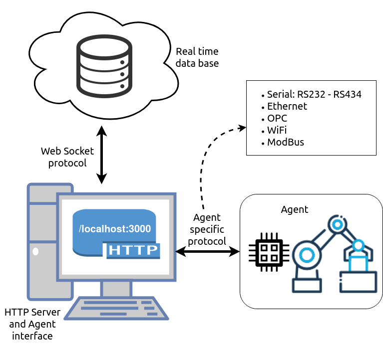

PRIA - UN¶
Contents:
Plataforma Robótica de Integración y Automatización¶
Desarrollo software que busca integrar los equipos de manufactura de planta presentes en el laboratorio fábrica experimental (LabFabEx) para el diseño, monitorizacion, supervision y control de tareas o procesos en tiempo real.
Equipos disponibles para integración:
- Robot Motoman
- Torno Tipo Suizo
- Grúa Maya
- SDV-UN
El protocolo que se sigue para la integración de los equipos se describe a continuación:
- Identificación de las variables de proceso mínimas (primitivas) necesarias para el envío de órdenes de tareas.
- Estandarización de tareas realizables por parte de las máquinas.
- Generación de código para ejecución local (standalone) que pruebe la funcionalidad d elas tareas identificadas anteriormente. El lenguaje de programación recomendado para esto es Typescript junto con el uso del entorno NodeJS.
- Vinculación del código anterior con la base de datos de tiempo real (Firebase) por medio de la creación de un servidor local.
- Pruebas de funcionamiento de conectividad con la base de datos.
Los numerales 1 al 3 son responsabilidad el desarrollador específico de cada máquina. PRIA-UN integra el recurso en los numerales 4 y 5.
En la siguiente tabla se encuncias las primitivas estandarizadas de cada una de las máquinas. En el caso del Torno tipo suizo y el robot Motoman, sus primitivas relacionan procesos de manufactura completos, es decir, una rutina pregrabada que es invocada utilizando PRIA-UN.
| Equipo | Primitivas |
|---|---|
| SDV | X, Y, Y, W |
| Grúa Maya | X, Y, Z |
| Torno Suizo | Proceso |
| Motoman | Proceso |
Como ejemplo se enuncian los procesos a los que se refiere la tabla anterior.
Procesos Torno Suizo:
- Digitech: pieza mecanizada que incluye el uso de los dos sistemas (S1 y S2).
- Banda: movimiento de la banda para expulsión de material.
Procesos Motoman:
- Pick table: agarre de bandeja situada en la mesa de trabajo ubicada frente al robot motoman.
- Pick lathe: agarre de bandeja situada frente al torno suizo.
- Pick SDV: agarre de bandeja situada en plataforma del vehículo SDV una vez es situado al lado del robot Motoman.
- Place table: Depósito de bandeja en la mesa de trabajo ubicada frente al robot motoman.
- Place lathe: Depósito de bandeja en frente del torno suizo.
- Place SDV: Depósito de bandeja en plataforma del vehículo SDV una vez es situado al lado del robot Motoman.
Red de conexiones¶
La topología de comunicaciones que se utiliza para conectar un equipo (agente) a PRIA-UN es la mostrada a continuación:
